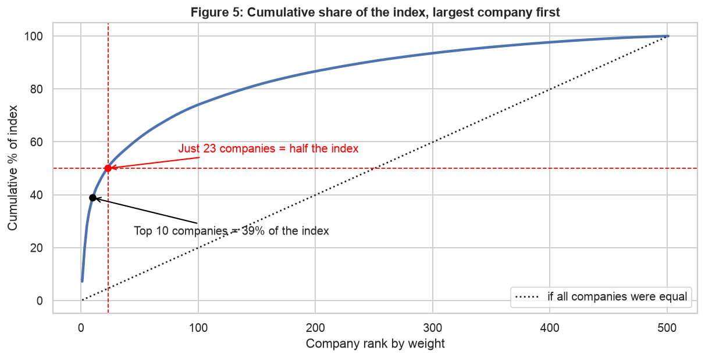
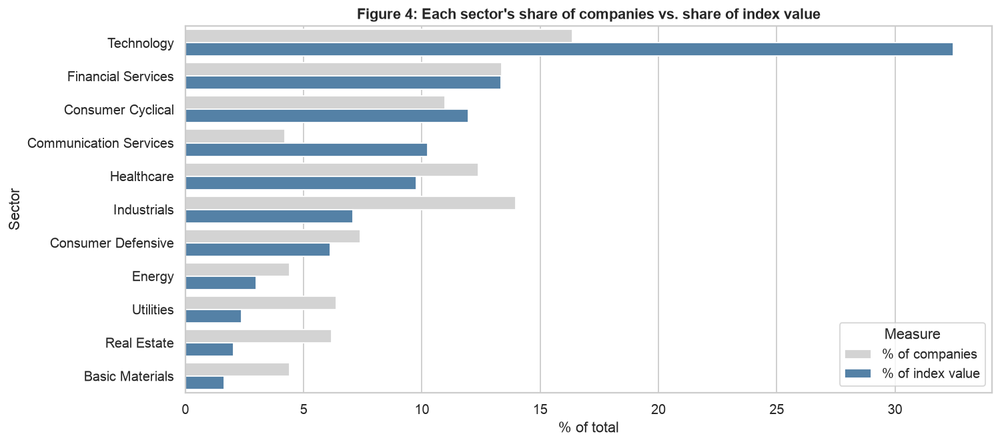
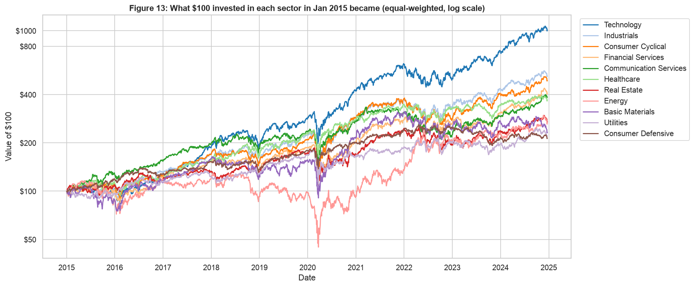
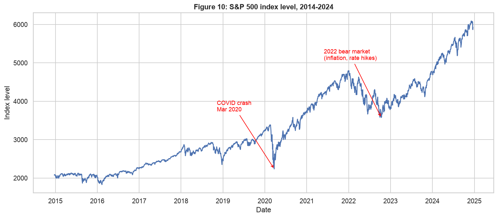
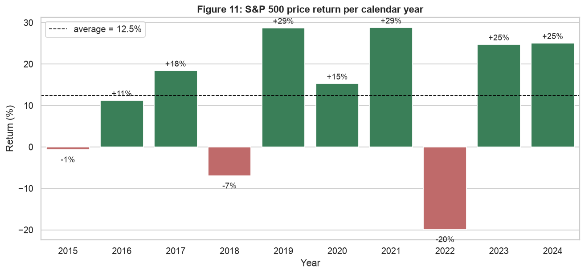
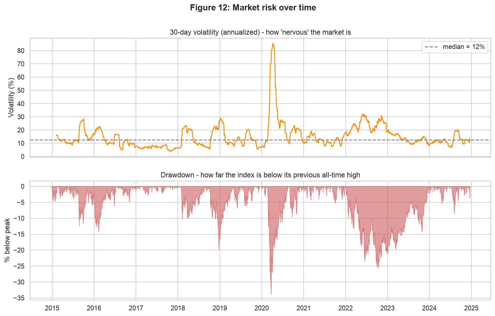
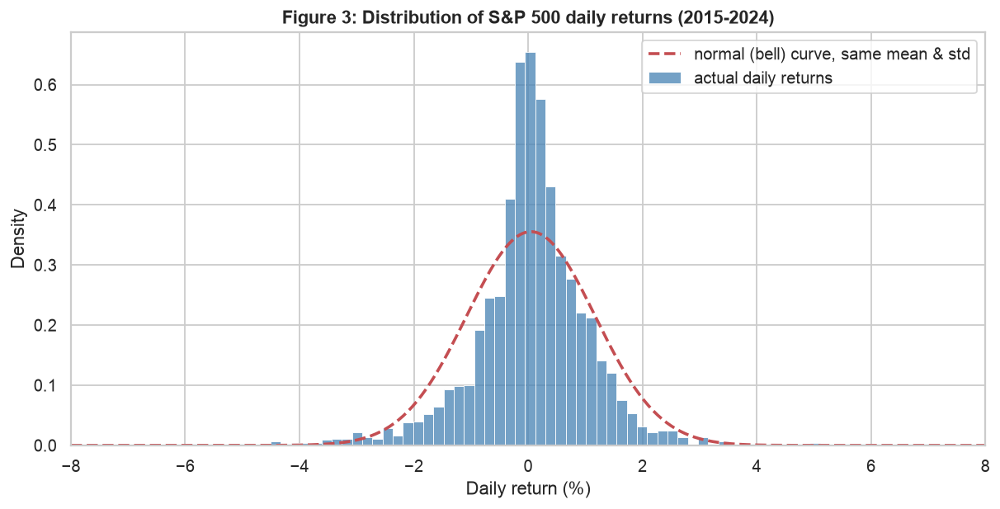
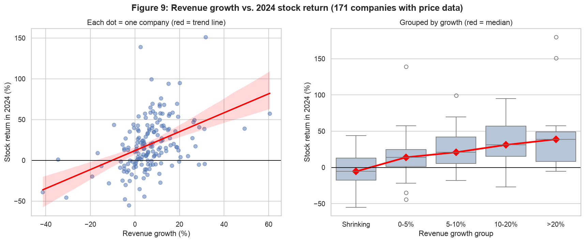
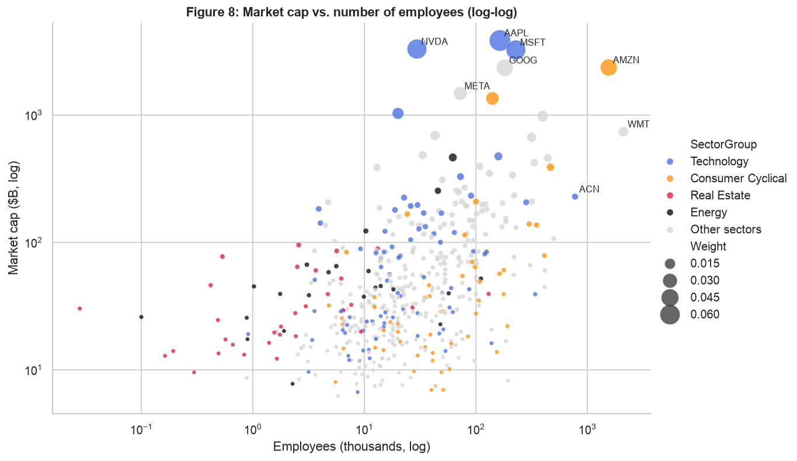
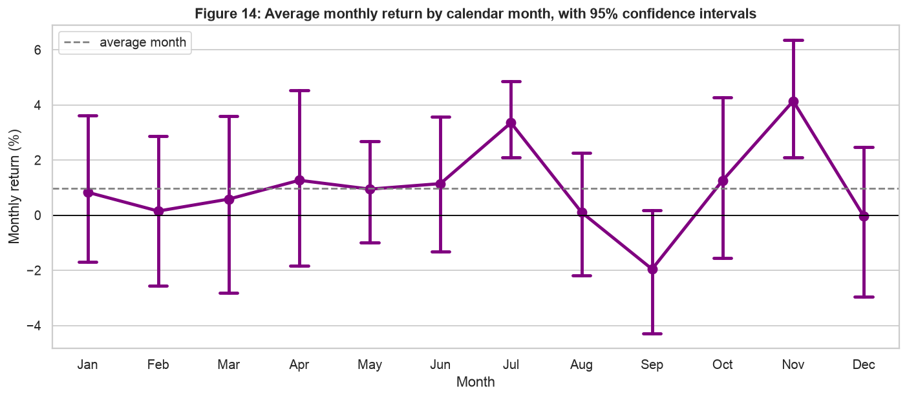

What 10 years of market data reveal about the index most people's savings are invested in: who really drives it, which sectors won, and how often it crashes.
The 10 largest companies make up 39% of the S&P 500, and just 23 companies make up half of it. The other 478 share the rest. Technology is only 16% of the companies but 32.5% of the value.


$100 invested in our sample of tech stocks in January 2015 grew to about $1,000. The same $100 in Consumer Defensive or Utilities only doubled. Energy was the only sector to fall to less than half its value, in the March 2020 oil crash.

The index almost tripled in 10 years (2,079 → 5,931), about 11% per year. 7 of 10 years were positive, but single years ranged from −20% (2022) to +29% (2019, 2021). Even 2020, the year of the COVID crash, ended +15%.


The market moved more than 3 standard deviations on 36 days, while a normal distribution predicts about 7. There were 5 drops of more than 10% in the decade:
| Crash | Fall | Days to bottom | Days to recover |
|---|---|---|---|
| COVID (2020) | −34% | 33 | 148 |
| Inflation & rates (2022) | −25% | 282 | 464 |
| Late 2018 | −20% | 95 | 120 |
A sudden shock recovered fast. A slow decline driven by inflation took more than three times as long.


In 2024, the typical stock of a company with shrinking sales fell 5.6%, while companies growing more than 20% rose a median 38.8%. Sector growth also differs significantly: tech grew faster than consumer staples (t-test, p = 0.001).

NVIDIA and Amazon are worth a similar amount, but Amazon has about 50× more employees. Real Estate and Energy companies are worth $9–13M per employee because they're built on physical assets. Retailers and other consumer companies are worth about $0.7M per employee.

November and July look strong and September looks weak. But a statistical test (ANOVA) shows the differences between months are not significant (p = 0.24). With only 10 observations per month, these patterns could easily be chance.

Limitations: Only 172 of 502 companies have price data (≈45% of the index by value). The data includes only current index members (survivorship bias). Returns exclude dividends. Relationships shown are not proof of cause.